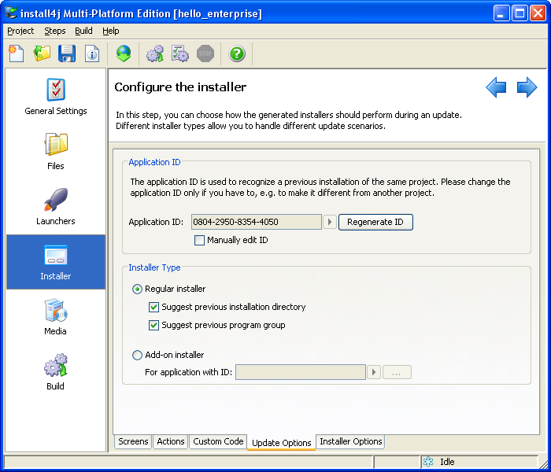

Updates


Updates |
|

Typically, minor upgrades of an application should be installed into the same directory as earlier installations. The default behavior of install4j is to suggest the previous installation directory and program group, so that the user is guided into installing the application into the same directory. If this behavior is not desired, you can switch off these suggestions or change the application id.
The following points are of interest with respect to updates into the same installation directory:
Note: installers generated with install4j <= 3.0.x do no have an application ID, it is always possible to install on top of such an installation.
If you would like to uninstall the previous installation before installing any new files,
you can add the "Uninstall previous installation" action before the "Install files" action.
In this context, the
uninstallation policies that exclude
updates are of interest. With these uninstallation policies you can preserve
certain files for updates, but uninstall them when the user manually invokes the uninstaller.
The uninstaller invoked by the "Uninstall previous installation" action is running in
unattended mode. You can use context.isUninstallForUpgrade() to exclude
certain actions for an update uninstaller.
For distributing enhancements and patches, install4j offers the add-on installer type that can be configured on the Update Options tab in the installer section.
An add-on installer will only install on top of an installation of a specified application id. It does not have a separate uninstaller.
|
|